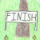

Help Page
This is a team vs team competition designed to make exercise (in this case pushups) more exciting while promoting team building at the same time.
I hope this competition keeps you fit and healthy, all while interacting with people and enjoying yourself.
Your Goal:

Have your team reach the finish first!
You can achieve this through doing pushups which will earn your team points, which you can then use to move your team closer to the finish.
How to record pushups?
Firstly do some pushups and count them as you do them.
They can be full body pushups, from the knees, from a table or pushuping off the wall.
Currently you are limited to 50 wall pushups and 50 knee pushups in a single session.
Different types of pushups will earn your team a different amount of points based upon their difficulty.
Make sure you count how many of each type you do.
As soon as you have finished, in this website, click the menu item: Pushups
Fill in the different fields with how many pushups you did.
Click submit, then on the next page confirm the amounts are correct.
Once you have done this, your pushups will be converted into points for your team.
Once your team has accumilated enough points they will be able to move.
Where is your team?
If your team is at the start or finish, your team's flag will appear above or below the map.
Otherwise, your team's flag will appear on the map in their current location
For example here is how your team will look if still at the start:
Understanding the map.
Different tiles will cost different amounts of pushups to move away from.
e.g. The forest tiles will require more, the footpath tiles will need less. As you get closer to the finish, more pushups will be needed.
To see how many pushups will be needed to get off a square, hover your mouse over it until the tool tip comes up to tell you.
Note, some tiles you can not move onto at all, such as the river tiles and the mountain tiles. These will show up as 0 points needed, as you can never move on to them.
You also can not move off the sides of the map.
When can you move your team?
You can see your team's total points on the main page.

The first part tells you which team you are on and shows you what your team flag looks like.
Your team has: 0 points out of a maximum: 165 This indicates how many points your team has and the maximum amount they can store.
Your team needs: 110 points to move forwards. This is how many points your team mush reach to move forwards (includes diagonally forwards).
Your team needs: 55 points to move sideways. This is how many points your team needs to move sideways. This is cheaper than forwards and should only be used if it is of strategic use to your team
Moving your team.
Once your team has enough points, arrows will appear showing where you can move your team.

Note: In the current version the arrows cover up the tiles, so if you want to remember how many points will be needed to move off the tile you are moving to, you can still hover your mouse over for the tool tip to find out how much that tile will cost to move off
To move, click on the arrow in the direction you want to move. A page will come up asking if you are sure, which you will have to accept before your team moves.
Remember, you are moving your entire team!
Jumping over a team.
If there is a team infront of yours, you will be able to jump over them!
This can be very useful for getting to the finish quicker.
But beware, other teams can also jump over you!
When it comes time to move, if you can jump over a team, the movement arrows will be adjusted, simply click the arrow that has you jumping over the other team
Winning!
When your team has accumilated enough points and are only 1 tile away from the finish, you will finally be able to move onto the Finish tile and win the game!

Once you have reached the finish tile, your team will be displayed as being a team that has reached the finish.
If there are other teams close to winning, we will keep the competition running a little longer to allow for 2nd, 3rd etc
Good Luck and Have fun :)